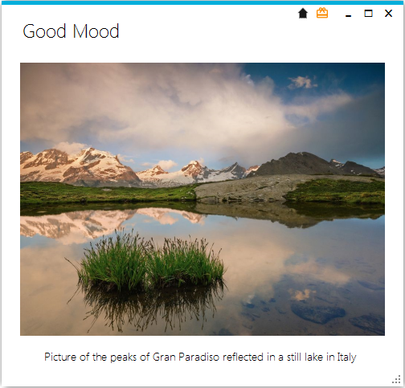

Welcome to GoodMood.
Goodmood change you desktop background with the "Photo of the day" picture taken from the [National Geographics WebSite]
Its focus is beaty and simplicity

Authors and Contributors
Main author Andrea Del Signore (@sejerpz)
Support or Contact
To report a problem or a feature request click here